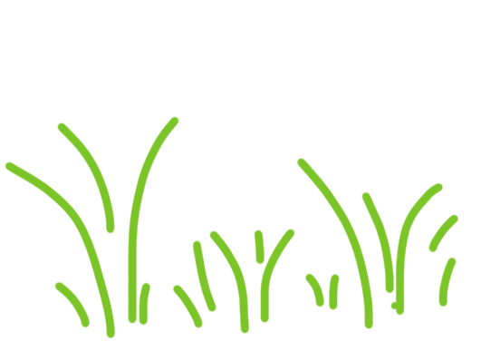
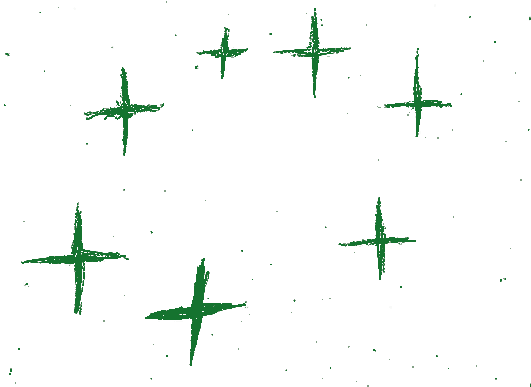
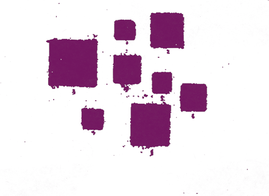
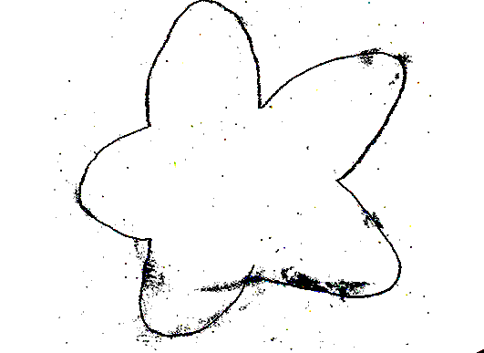
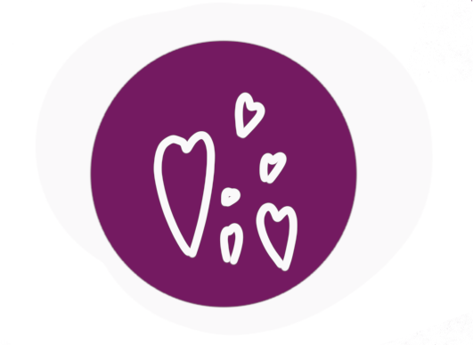

Voting closes in 2 weeks so make sure you get your vote in.
Dirt From Road A/B
2 out of 10 60%
Comments Section
 Hii! I voted for B because I thought it just seemed like a better option because I usually like side profiles and because birds eye view pictures scare me because I am afraid of heights but I know that doesn’t really apply to this one because usually every time we see dirt it is kind of from a birds eye view.
 I didn’t know what we were voting for so I voted for the underdog.
 When I vote on things like dirt, I usually take some time… a few days… and this time I had a dream that I was in a voting booth for what I thought was class president… but when I got the ballot… dirt A and B were on it just like they are on the website here… I was nervous and some guy kept banging on the door to the booth… he was yelling “Vote dirt A!” over and over… I did it out of fear… So when I woke up I voted dirt B in spite of my dream pressureer
If I got to vote again, I would change to A. I just think after pulling the trigger on B was a bad choice. I kept looking at it and I think there is more going on in A. There is something special about it
 I didn’t vote. Or it wasn’t me who voted!! My little brother took my computer and voted for me. Ugh.
 I really hope they open back up voting : 0 I told some friends about it and I think that A has a shot because my friends like birds eye view stuff @grassprofilepicperson